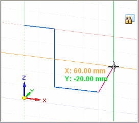
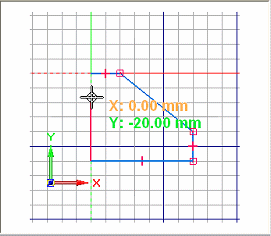

Grid Options command
The Grid Options command displays the Grid Options dialog box, which you use to do the following:
-
Turn the grid on and off.
-
Turn alignment lines on and off.
-
Turn snap-to-grid on and off.
-
Turn coordinate display on and off.


The Grid Options dialog box also is where you change settings for grid appearance, line color, and major and minor line spacing.
You can use the grid with all drawing, dimensioning, and annotation commands.